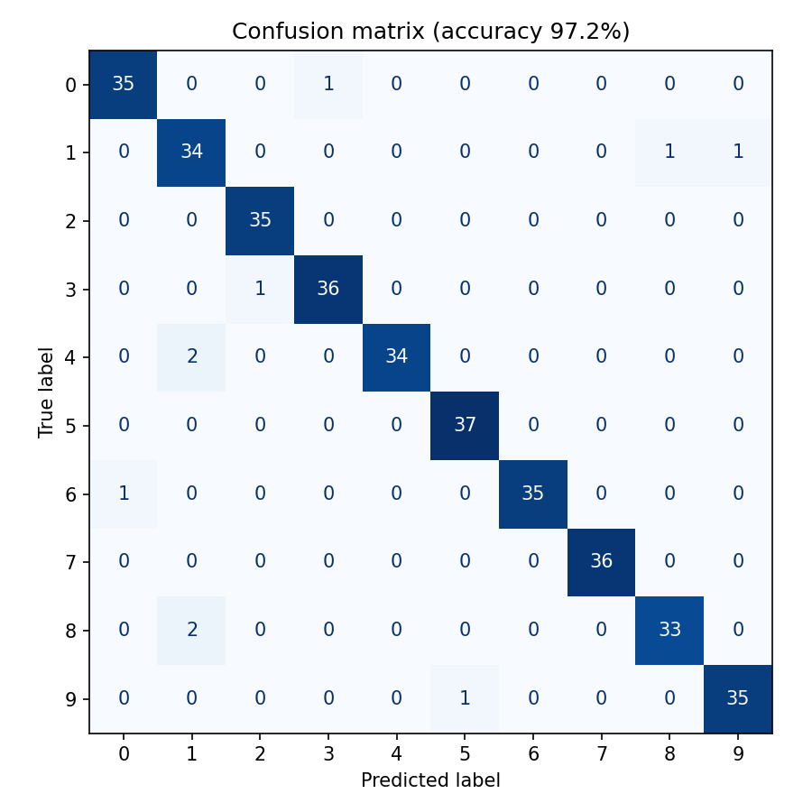
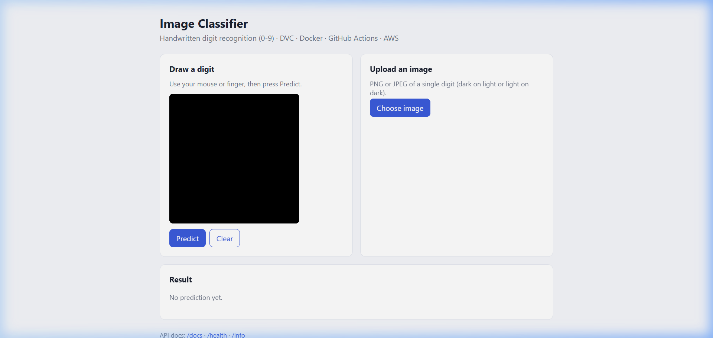
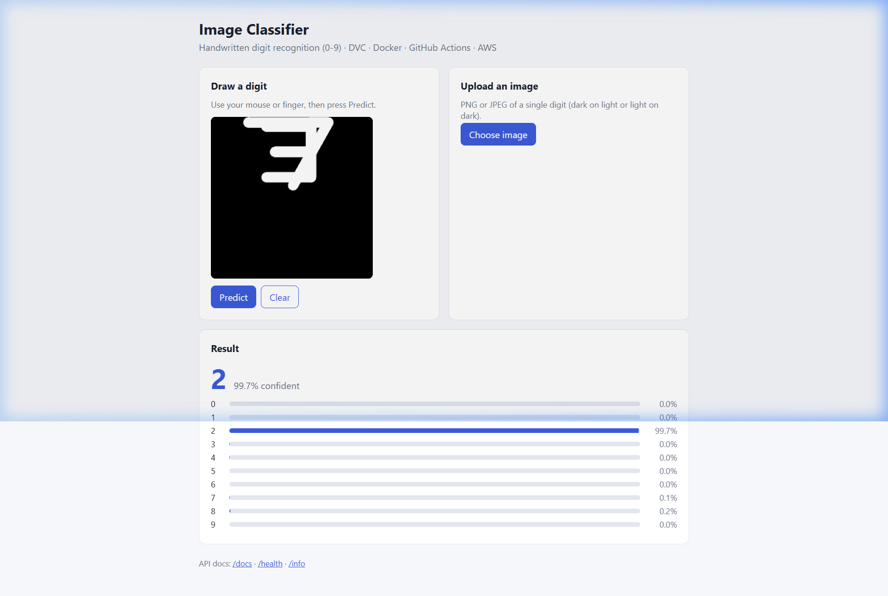
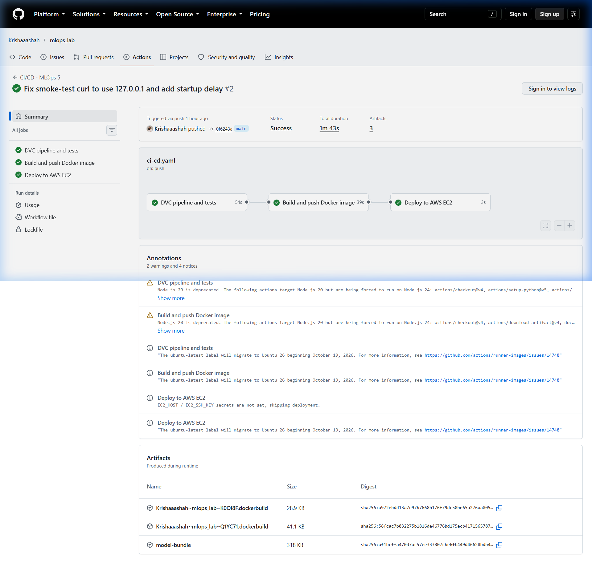

Optical Handwritten Digit Recognition Service · Automated Cloud Deployment
s3://image-classifier-dvc-ks-948215/dvcstore (1,801 objects)
AWS EC2 Instance: i-09a2e2d2bd3f29168 (IP: 13.232.17.213, Region: ap-south-1)
This project implements an end-to-end Machine Learning Operations (MLOps) pipeline for an optical handwritten digit classifier. The architecture bridges model training, version control, automated testing, containerized packaging, cloud provisioning, and continuous deployment to AWS:
prepare → preprocess → train → evaluate) with remote storage backed by an encrypted Amazon S3 bucket.appuser) with embedded health checks.pipeline → docker → deploy) enabling zero-downtime automated deployment to EC2 upon every push to main.
+-----------------------------------------------------------------------------------+
| DEVELOPER WORKSPACE |
| |
| [Code / Tests] [dvc repro] [dvc push] |
| | | | |
+---------|------------------|-----------------|------------------------------------+
| | |
v | v
+-----------------------+ | +-------------------------------------------------+
| GitHub Repository | | | AWS S3 REMOTE STORE |
| - .dvc/config | | | Bucket: image-classifier-dvc-ks-948215 |
| - dvc.lock | | | Prefix: s3://.../dvcstore |
| - .github/workflows/ | | | - 1,801 objects (Raw data, train/test, model) |
+-----------------------+ | +-------------------------------------------------+
| | ^
| git push +-------------------------+
v
+-----------------------------------------------------------------------------------+
| GITHUB ACTIONS CI/CD RUNNER |
| |
| 1. Pipeline Job: dvc pull -> dvc repro -> dvc metrics show -> pytest |
| 2. Docker Job : docker build -> smoke test (/health) -> push ghcr.io |
| 3. Deploy Job : SSH into AWS EC2 -> docker pull -> docker run -p 80:8000 |
+-----------------------------------------------------------------------------------+
|
| SSH Deploy (Port 22)
v
+-----------------------------------------------------------------------------------+
| AWS EC2 INSTANCE (i-09a2e2d2bd3f29168) |
| Public IP: 13.232.17.213 | ap-south-1 |
| |
| +-----------------------------------------------------------------------------+ |
| | Security Group (sg-05266645655d69bda) | |
| | - Port 22 (SSH) : 0.0.0.0/0 (Automated CI/CD runner deployment) | |
| | - Port 80 (HTTP): 0.0.0.0/0 (Public Web Traffic) | |
| +-----------------------------------------------------------------------------+ |
| |
| Docker Engine (Active & Auto-restarting): |
| +-----------------------------------------------------------------------------+ |
| | Container: image-classifier (Port 80 -> 8000) | |
| | - GET / : Interactive canvas web application UI | |
| | - POST /predict : Multi-part image classification endpoint | |
| | - GET /health : Container health monitoring endpoint | |
| | - GET /docs : Swagger OpenAPI specifications | |
| +-----------------------------------------------------------------------------+ |
+-----------------------------------------------------------------------------------+
The DVC pipeline achieves 97.22% test accuracy across 360 held-out evaluation samples:
| Metric | Achieved Value | Evaluation Samples | Status |
|---|---|---|---|
| Test Accuracy | 97.22% | 360 | Verified |
| Macro F1-Score | 0.9723 | 360 | Verified |
| Training Accuracy | 100.0% | 1,437 | Verified |

image-classifier-dvc-ks-948215 in ap-south-1. Block Public Access enabled, default AES-256 encryption. Holds 1,801 DVC tracked objects (885,511 bytes).dvc-ci-user with custom least-privilege policy restricted to the project bucket.i-09a2e2d2bd3f29168 (t3.micro Free Tier, Amazon Linux 2023, Public IPv4: 13.232.17.213).sg-05266645655d69bda with TCP 22 (SSH deployment) and TCP 80 (HTTP Web traffic).The application is live and accessible at http://13.232.17.213. Live digit tests achieved 99.7% confidence:


The pipeline automatically runs on every push to main at Workflow Run #38736393369:

prepare -> preprocess -> train -> evaluate PNG images train/test MLP metrics.json + per class feature sets model confusion matrix Path accuracy macro_f1 train_accuracy metrics.json 0.97222 0.97227 1.0
Total Objects: 1,801 Total Size: 885,511 Bytes Bucket Name: image-classifier-dvc-ks-948215 Region: ap-south-1 Encryption: AES256 (Default SSE) Public Access: Blocked (All 4 settings ON)
Instance ID: i-09a2e2d2bd3f29168 Public IPv4: 13.232.17.213 Operating System: Amazon Linux 2023 Security Group: sg-05266645655d69bda (Ports 22, 80 open to 0.0.0.0/0) Remote 'docker ps': CONTAINER ID IMAGE COMMAND STATUS PORTS 1f9076f62590 image-classifier "uvicorn app.main:ap…" Up 3 hours 0.0.0.0:80->8000/tcp
| Deliverable | Location / Link | Status |
|---|---|---|
| GitHub Repository | Krishaaashah/mlops_lab (mlops_5/) | Pushed & Live |
| CI/CD Workflow | GitHub Actions Run #38736393369 | All 3 Jobs Green |
| AWS S3 Remote | s3://image-classifier-dvc-ks-948215/dvcstore | 1,801 Objects |
| Live Web Application | http://13.232.17.213 | Serving (Port 80) |
| Interactive Swagger UI | http://13.232.17.213/docs | Active |
| Submission ZIP | mlops_5_submission_24070126512.zip | ~1.5 MB (< 8 MB) |